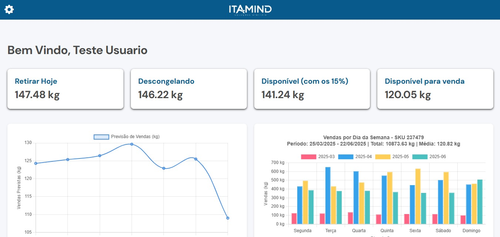
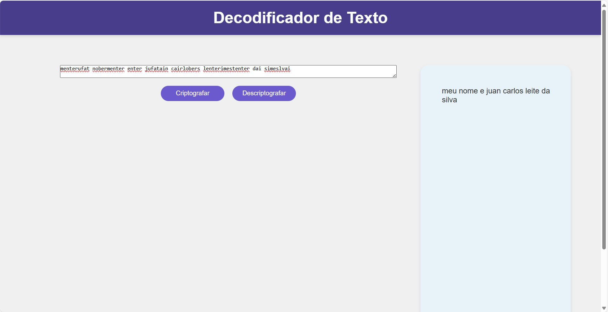
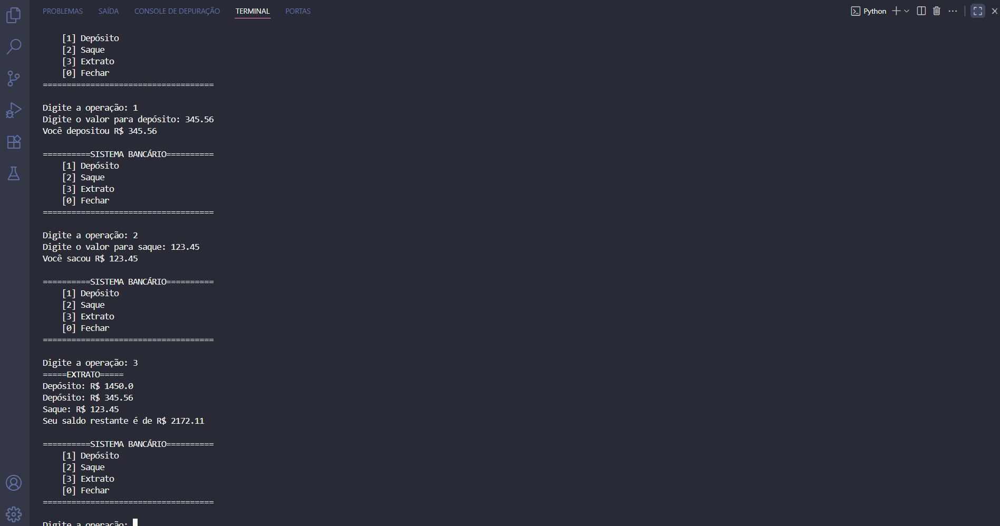

Meus Projetos

Projeto Itamind
O Itamind é um software desenvolvido para calcular previsões de vendas de interfolhados (asa de frango, filé de peito, ...), construído com diversas tecnologias, sendo a principal delas o Python.

Decodificador de Texto
Um clone da interface da Netflix para treinar responsividade e estilização com CSS Flexbox e Grid.

Sistema Bancário
Ainda em estágio de prototipação, mas irá simular o funcionamento do sistema bancário, com funcões de saque, depósito, emitir extrato, cadastro, etc. A linguagem utilizada é o Python
Jogo do Número Secreto
Ainda em estágio de prototipação, mas irá simular o funcionamento do sistema bancário, com funcões de saque, depósito, emitir extrato, cadastro, etc. A linguagem utilizada é o Python